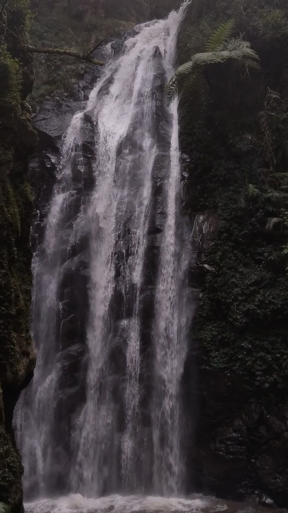
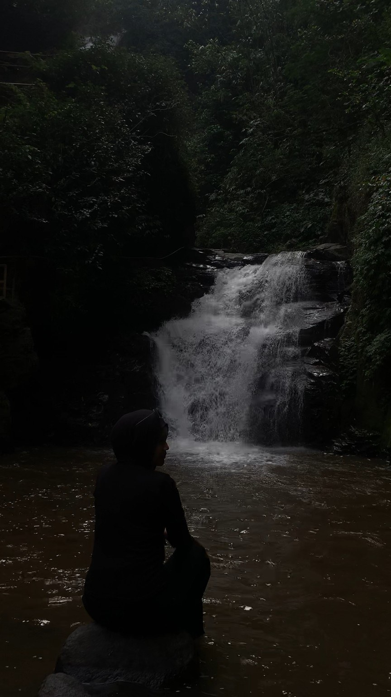
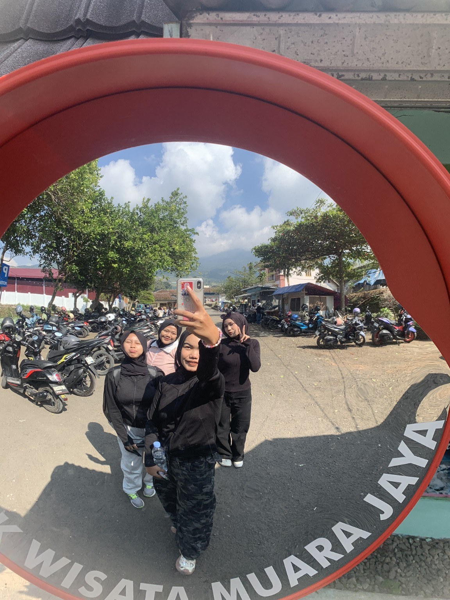
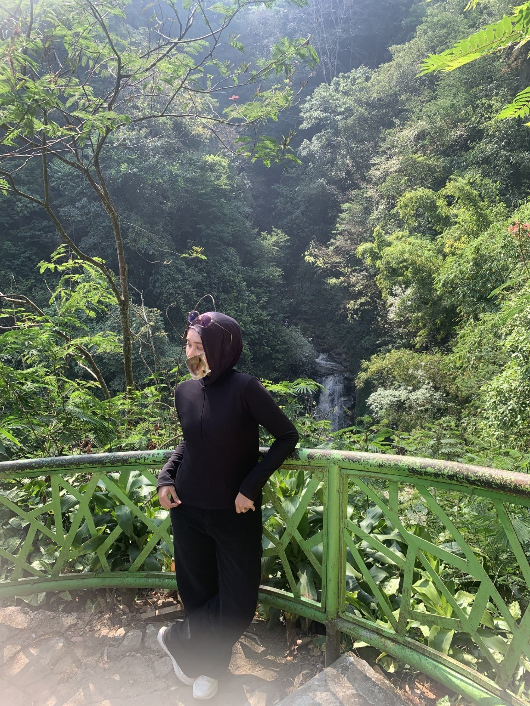

Harga tiket masuk
DESTINASI WISATA ALAM
Dashboard Wisata
HIDDEN NATURAL BEAUTY
Temukan ketenangan
Temukan ketenangan
di Curug Muara Jaya
Nikmati kesegaran air terjun, hijaunya pepohonan, dan suasana alam yang menenangkan.

Curug Muara JayaKeindahan alam yang menyegarkan
Parkir motor
Rp3.000
Tarif parkir kendaraanSuasana wisata
Alam & Air Terjun
Cocok untuk melepas penatKENALI DESTINASINYA
Tentang Curug Muara Jaya
Curug Muara Jaya merupakan destinasi wisata alam dengan daya tarik air terjun yang dikelilingi pepohonan hijau dan bebatuan alami. Suasananya cocok untuk menikmati udara segar, berfoto, serta menghabiskan waktu bersama teman atau keluarga.
✓ Pemandangan air terjun
✓ Suasana alam yang asri
✓ Spot untuk foto dan berlibur
INFORMASI SINGKAT
Rencana Kunjungan
LokasiMajalengka, Jawa Barat
Daya tarikAir terjun dan alam hijau
Biaya dasar per orang + motorRp18.000
*Belum termasuk biaya lain jika ada. Pastikan tarif terbaru sebelum berkunjung.
MOMEN DI ALAM
Galeri Wisata



LIHAT LANGSUNG
Intip keseruan
Curug Muara Jaya
Tonton video wisata untuk melihat suasana dan keindahan destinasi ini.
Tonton di YouTube ↗